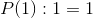
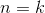
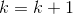
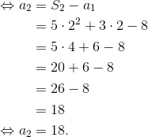
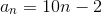
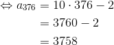
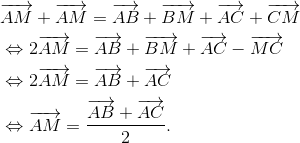

Model de teză | Matematică | Clasa a 9-a | Mate - Info | Semestrul I
Aceasta este rezolvarea modelului de subiect propus de profesorii de matematică ai echipei Liceunet, pentru clasa a IX-a, profilul mate-info.
- Să se rezolve ecuațiile următoare:

![\left [ \displaystyle\frac{3x+1}{2} \right ]=5.](https://media.liceunet.ro/files/webbooks/images/474/equations/suTy1kZ_6xB6WN415KPSWA==.gif)
Rezolvare:
![\begin{align*} &\sqrt{9x^2-36x+36}+6(|2-x|-3)=9 \\\\ &\Leftrightarrow \sqrt{(3x-6)^2}+6\cdot|2-x|-18=9 \\\\ &\Leftrightarrow|3x-6|+6|2-x|=9+18 \\\\ &\Leftrightarrow|-6+3x|+6|2-x|=27 \\\\ &\Leftrightarrow|-3(2-x)|+6|2-x|=27 \\\\ &\Leftrightarrow|-3|\cdot|2-x|+6|2-x|=27 \\\\ &\Leftrightarrow3|2-x|+6|2-x|=27 \\\\ &\Leftrightarrow |2-x|(3+6)=27 \\\\ &\Leftrightarrow |2-x|\cdot 9=27 \\\\ &\Leftrightarrow |2-x|=\frac{27}{9} \\\\ &\Leftrightarrow |2-x|=3 \\ \\&\Leftrightarrow 2-x=3 \text{\ sau\ } 2-x=-3 \\\\ &\Leftrightarrow -x=3-2 \text{\ sau\ } -x=-3-2 \\\\ &\Leftrightarrow -x=1 \text{\ sau\ } -x=-5 \\\\ &\Leftrightarrow x=-1 \text{\ sau\ } x=5 \\\\ &\Rightarrow S=\{-1,5\}. \end{align*}](media/webbooks/494/3559/images/equations/mm-9meqjppnyakak7dimeq==.gif)
![\begin{align*} &\left[\frac{3x+1}{2}\right]=5 \\\\ &\Leftrightarrow 5\leq\frac{3x+1}{2}<5+1 \\\\ &\Leftrightarrow 5\leq \frac{3x+1}{2}<6 \quad |\cdot 2 \\\\ &\Leftrightarrow 2\cdot5\leq 2\cdot \frac{3x+1}{2}<2\cdot6 \\\\ &\Leftrightarrow 10\leq 3x+1<12\quad |-1 \\\\ &\Leftrightarrow 10-1\leq 3x+1-1<12-1 \\\\ &\Leftrightarrow 9\leq 3x<11 \quad |\cdot\frac{1}{3} \\\\ &\Leftrightarrow 9\cdot\frac{1}{3}\leq 3x\cdot \frac{1}{3}<11\cdot\frac{1}{3} \\\\ &\Leftrightarrow \frac{9}{3}\leq \frac{3x}{3}<\frac{11}{3} \\\\ &\Leftrightarrow 3\leq x<\frac{11}{3} \\\\ &\Leftrightarrow x\in\left[3,\frac{11}{3}\right). \end{align*}](media/webbooks/494/3559/images/equations/lwkhjqjglw0pwl7v7x9e6a==.gif)
- Să se demonstreze prin inducție matematică egalitatea:

Rezolvare:
Notăm egalitatea de mai sus cu  :
:
Verificăm etapele inducției matematice:
Etapa I (etapa de verificare):
Cum  , verificăm egalitatea pentru
, verificăm egalitatea pentru  :
:
, ceea ce înseamnă egalitatea este adevărată.
Etapa II (etapa de demonstrare):
Pentru , presupunem că este adevărată şi demonstrăm, pentru , că este adevărată.
Avem:
adevărată.
Membrul stâng din propoziția îl scriem în funcție de propoziția , astfel:
.
Rezultă că este adevărată, deci și este adevărată, unde
- Dacă
 sunt trei numere reale pozitive, să se demonstreze că
sunt trei numere reale pozitive, să se demonstreze că 
Rezolvare:
Formăm pătrate perfecte, care să verifice inegalitatea dată.
Astfel, succesiv se obține că:
Ceea ce este adevărat, deoarece orice număr ridicat la puterea  este mai mare sau egal cu zero.
este mai mare sau egal cu zero.
Așadar, inegalitatea dată este demonstrată.
- Fie
 o progresie aritmetică care are suma primilor
o progresie aritmetică care are suma primilor  termeni
termeni  Să se afle:
Să se afle:- rația
 și primul termen al progresiei aritmetice,
și primul termen al progresiei aritmetice,  .
. - termenul general al progresiei aritmetice,
 .
. - cât este termenul

- rația
Rezolvare:
- Cum suma este:
,
dăm valori lui  , pentru a putea afla primul termen al progresiei aritmetice date și rația acesteia.
, pentru a putea afla primul termen al progresiei aritmetice date și rația acesteia.
Astfel, avem:

Rezultă că
- Pentru a putea rezolva acest subpunct, putem folosi două metode, după cum urmează:
Metoda I (folosind formula termenului general + subcpunctul a.)

Metoda II (folosind suma primilor termeni ai progresiei aritmetice date)
Dar,
,
de unde se obține că
- Folosind subpunctul b. avem:


Sau, folosind formula termenului general:
 ,
,
avem că:
- Fie triunghiul
 și
și  mijlocul laturii
mijlocul laturii ![\left [ BC \right ]](https://media.liceunet.ro/files/webbooks/images/474/equations/qwB6rBJihJfVYqvEJgAvsw==.gif) . Să se demonstreze relația vectorială
. Să se demonstreze relația vectorială 
Rezolvare:
În figura de mai jos avem reprezentate datele problemei:

Cum este mijlocul laturii , rezultă , așa cum se poate vedea și în figura de mai sus.
Vectorul  îl calculăm în două moduri, astfel:
îl calculăm în două moduri, astfel:
- În triunghiul avem:
- În triunghiul
 avem:
avem:
Adunând cele două relații,  și
și  , obținem:
, obținem:

Astfel, am demonstrat egalitatea dată.
Aceasta a fost rezolvarea modelului de subiect propus de profesorii noștri de matematică, pentru clasa a IX-a, profilul mate-info. Verifică rezolvarea ta și vezi cât ai fi luat la teză, dacă ai fi avut acest model.